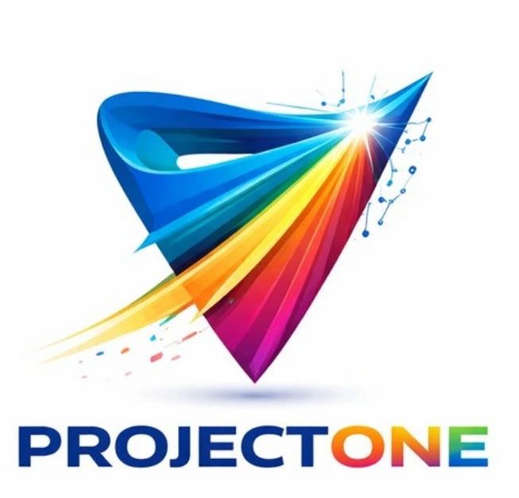

Design & modernisation
Plan infrastructure around business requirements, resilience and future growth.
 Let’s talk ↗
Let’s talk ↗Structured execution that turns audit recommendations into a secure, standardised and scalable IT foundation.
Plan your IT transformation ↗
Plan infrastructure around business requirements, resilience and future growth.
Use consistent configurations and repeatable deployment practices.
Address identified weaknesses and improve the security of deployed systems.
Connect new and existing technology into a cohesive working environment.
Coordinate implementation across the environments your organisation uses.
Tune the environment for reliability, efficiency and day-to-day productivity.
Review audit findings, dependencies and implementation priorities.
Define the architecture, milestones, resources and delivery plan.
Configure, integrate and harden the agreed infrastructure.
Test deliverables against the original requirements and document the outcome.
↗ Consistent systems and configurations
↗ Visible milestones and delivery accountability
↗ A foundation designed to grow with the business
Implementation scope, timelines and any maintenance windows are agreed around your environment.Start with a free 30-minute discovery conversation.